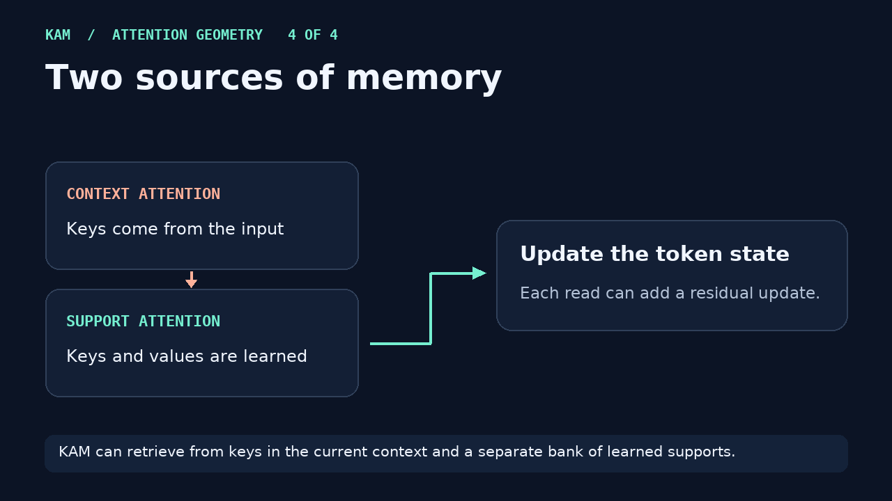

Kernel Adaptive Memory
from first principles
How does a sequence model decide what to read? Start with a weighted average, choose what counts as nearby, and then ask what a model can retrieve from memory beyond the current sequence.
What you will learn
- Compute an attention read by hand and predict how a learned metric changes it.
- Trace the two reads in a KAM block and distinguish a persistent support from a context token.
- Use an exact rule for historical revisions and interpret what the retrieval experiments measure.
Prerequisites are vectors, squared distance, and averages. For a longer refresher, see the companion course’s attention from scratch chapter.
1. Attention as a weighted average
Suppose two nearby sensors report 10 and 20 degrees. If the first reading deserves three times as much weight as the second, use weights 0.75 and 0.25. The estimate is 0.75 × 10 + 0.25 × 20 = 12.5 degrees. Attention computes this kind of average with weights that depend on the question being asked.
- Query q
- What you want to find. Here, the location where you want a temperature estimate.
- Key k
- What you compare with the query. Here, a sensor’s location.
- Value v
- What that key returns. Here, the temperature it measured.
Score each key against the query. Softmax exponentiates the scores and divides by their sum, so the weights add to one. Then average the values using those weights.
Check your understanding · What if the scores tie?
Equal scores give equal weights. With just these two sensors, each receives half the weight and the read returns 15 degrees.
2. Learning a distance
A radial head gives larger scores to closer keys. Begin with squared distance and allow each coordinate to contribute by a different amount. The model learns the positive coordinate weights mi and bandwidth σ.
Work it out before moving the sliders
Put the query at (0, 0) and two keys at (1, 0) and (0, 2). With both metric weights equal to 1, the squared distances are 1 and 4. The first key gets the larger weight. Set the horizontal weight to 9 and the distances become 9 and 4. Now the second key gets the larger weight. Changing bandwidth alone preserves that order and changes how far apart the weights are.
Interactive lab · Shape the attention read
Drag the query q or use the sliders to move it. Each ring marks an equal score. Try raising the horizontal metric weight while keeping the query still. Which keys lose weight?
Check your understanding · What happens as bandwidth grows?
Each score approaches zero because the denominator grows. Softmax approaches equal weights. At small bandwidth, the nearest key dominates if it is uniquely closest.
Watch · From distance to memory
3. Reading a persistent memory
In causal context attention, the keys and values come from the current token and the earlier tokens it can see. Each sequence supplies its own context. A KAM block can also read from a bank of learned key–value pairs, called supports, that are shared across sequences.

For example, a token representing only part of a question can first combine it with earlier words. The updated representation then queries the support bank. The bank persists because it is part of the model’s parameters. In this variant, running a new prompt leaves those parameters as they were.
Check your understanding · Which keys change with a new sequence?
The projected context keys change with the tokens. The learned supports are shared. Their weights can still change because the query is computed from the new sequence.
4. Looking up a revision
Suppose we stored several estimates for the same quarter. The quarter identifies the observation, while each release day tells us when a version became known. A question about what was known on day 17 must exclude every release after day 17, even if it describes the right quarter.
- Keep the records with the requested identity and observation period.
- Keep releases at or before the cutoff.
- Choose the latest eligible release. If none qualify, return no record.
Interactive lab · Read the archive as of a date
All four synthetic releases describe one observation. Predict the selected record on day 22 and day 23, then move the cutoff to check.
Selected value 100.9
| Record | Release day | Value | Status |
|---|---|---|---|
| 1 | 5 | 102.4 | Superseded |
| 2 | 12 | 100.9 | Selected |
| 3 | 23 | 101.6 | Future |
| 4 | 30 | 101.2 | Future |
This is the exact lookup rule used to audit the archive labels. The learned retrieval experiment asks whether the decoder can recover the same target from a candidate pool.
Check your understanding · What if the cutoff is day 4?
No record qualifies. The earliest release is on day 5, so choosing it would use information from the future.
5. Reading the experiments
The geometry lab demonstrates the scoring rule. Each research experiment asks a narrower question about how well a model or retrieval method works on a specific task.
- Can the model recover the correct revision?
- At 48 candidates in the Dallas Fed archive, radial recovery rose from 3.8% to 57.6% after training on synthetic histories that model clusters of releases. The evaluation supplied typed identities and used answerable questions. Archive experiment and plot.
- Can a pair scorer recover two pieces of evidence?
- In a held-out HotpotQA study, the pair scorer led when the two supporting documents linked to each other. Sequential retrieval led on unlinked evidence. These results use separate retrieval heads with shared candidate pools. Supporting-link study.
- Can the radial read run on a fast attention kernel?
- In the tested full-context variant, expanding the squared distance produces a dot product plus a key-dependent term. The query-only term cancels in softmax. That lets the scorer use an optimized attention kernel. Derivation and GPU timings.